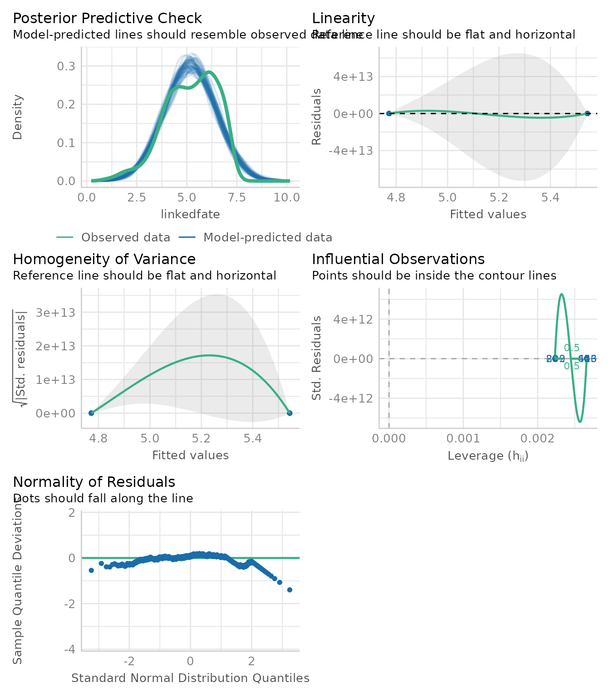
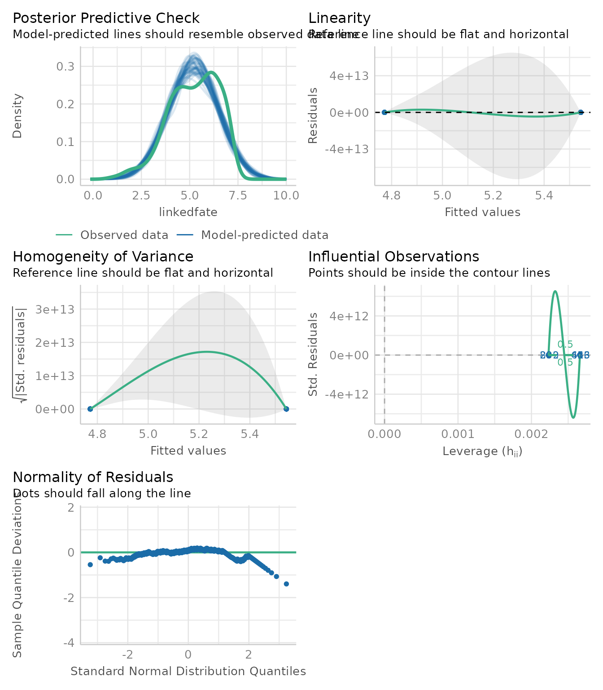

Mediation analysis with JSmediation
Cédric Batailler
2021-06-17
Source:vignettes/jsmediation.Rmd
jsmediation.RmdSimple mediation
JSmediation offers helpers to conduct a joint significant mediation test. With this package, you can type a mediation model the way you think it, JSmediation dealing with fitting underlying models.
In this vignette, we will conduct a joint-significant test for a simple mediation scenario.
We will use a data set from Ho, Kteily and Chen (2017). In this experiment, authors hypothesized that presenting a text stating that Black-White biracials were discriminated would lead Black participants to associate Black-White biracials more with their lower status parent group than their higher status parent group, according to the rule of hypodescent. In this experiment, the authors tested if this effect was mediated by the sense of linked fate between discriminated Black-White participants and Black participants. This data set is shipped with the JSmediation and is called ho_et_al.
First, we will load the JSmediation package in our environnement so we can use its functions.
Now that JSmediation is attached, we can load its function, including the ho_et_al data set.
head(ho_et_al)
#> id condition sdo linkedfate hypodescent
#> 1 2 Low discrimination 1.8125 6.000 2.333333
#> 2 3 High discrimination 1.5625 5.875 6.000000
#> 3 4 High discrimination 1.7500 6.625 6.000000
#> 4 5 Low discrimination 4.2500 5.125 5.666667
#> 5 6 Low discrimination 1.9375 4.375 4.000000
#> 6 9 High discrimination 2.8750 3.750 4.000000The first thing we can see in this data set is that the condition variable is coded as text something that JSmediation doesn’t support. The first step will be to build a new variable which will represent the discrimination condition with a contrast code. To do so, we will use the build_contrast function.
ho_et_al$condition_c <- build_contrast(ho_et_al$condition,
"Low discrimination",
"High discrimination")
head(ho_et_al)
#> id condition sdo linkedfate hypodescent condition_c
#> 1 2 Low discrimination 1.8125 6.000 2.333333 -0.5
#> 2 3 High discrimination 1.5625 5.875 6.000000 0.5
#> 3 4 High discrimination 1.7500 6.625 6.000000 0.5
#> 4 5 Low discrimination 4.2500 5.125 5.666667 -0.5
#> 5 6 Low discrimination 1.9375 4.375 4.000000 -0.5
#> 6 9 High discrimination 2.8750 3.750 4.000000 0.5Now that we have a data frame we can use for the analysis, we will use the mdt_simple function to fit a simple mediation model. Note that any model JSmediation support is implemented in a mdt_* function.
my_model <-
mdt_simple(ho_et_al,
IV = condition_c,
DV = hypodescent,
M = linkedfate)We now have an object of class mediation_model, we can now whether our data support a simple mediation.
Before looking into the results, we will check for OLS assumptions because underlying models used in a joint significant test are actually linear models.
We will extract one model and plot diagnostic plots using the plot method for object of class lm. To do so, we will use the extract_model method. To use this function, we will use the step argument which allow us to ask for a specific model. Note that step allow name of model as well as integer value to be requested.
model_1 <- extract_model(my_model, step = "X -> M")
plot(model_1, ask = FALSE)

We will do the same thing for the two other models mdt_simple has fitted.
model_2 <- extract_model(my_model, step = 2)
plot(model_2, ask = FALSE)
model_3 <- extract_model(my_model, step = 3)
plot(model_3, ask = FALSE)
It appears that none of the fitted models violate OLS assumptions.
Note that, alternatively, we could have used extract_models method to get back a list of lm objects instead of multiple single lm objects.
Now that we check for our assumptions, we can interpret our model. To do so, we just have to call for my_model. The structure of objects of class mediation_model is rather complex but there is a print method for these objects. The print method is implicitly called one called for the my_model object.
my_model
#> Test of mediation (simple mediation)
#> ==============================================
#>
#> Variables:
#>
#> - IV: condition_c
#> - DV: hypodescent
#> - M: linkedfate
#>
#> Paths:
#>
#> ==== ============== ===== =======================
#> Path Point estimate SE APA
#> ==== ============== ===== =======================
#> a 0.772 0.085 t(822) = 9.10, p < .001
#> b 0.187 0.033 t(821) = 5.75, p < .001
#> c 0.171 0.081 t(822) = 2.13, p = .034
#> c' 0.027 0.083 t(821) = 0.33, p = .742
#> ==== ============== ===== =======================
#>
#> Indirect effect index:
#>
#> Indirect effect index is not computed by default.
#> Please use add_index() to compute it.
#>
#> Fitted models:
#>
#> - X -> Y
#> - X -> M
#> - X + M -> YIn this summary, both a and b paths are significant, we could conclude that the indirect effect of discrimination on hypodescent by linked fate is significant according to the joint significant test.
We could choose to compute the Monte Carlo moderation index using add_index function. This functions adds the indirect effect to the mediation_model object which is print directly.
add_index(my_model)
#> Test of mediation (simple mediation)
#> ==============================================
#>
#> Variables:
#>
#> - IV: condition_c
#> - DV: hypodescent
#> - M: linkedfate
#>
#> Paths:
#>
#> ==== ============== ===== =======================
#> Path Point estimate SE APA
#> ==== ============== ===== =======================
#> a 0.772 0.085 t(822) = 9.10, p < .001
#> b 0.187 0.033 t(821) = 5.75, p < .001
#> c 0.171 0.081 t(822) = 2.13, p = .034
#> c' 0.027 0.083 t(821) = 0.33, p = .742
#> ==== ============== ===== =======================
#>
#> Indirect effect index:
#>
#> - type: Indirect effect
#> - point estimate: 0.144
#> - confidence interval:
#> - method: Monte Carlo (5000 iterations)
#> - level: 0.05
#> - CI: [0.0899; 0.206]
#>
#> Fitted models:
#>
#> - X -> Y
#> - X -> M
#> - X + M -> YFollowing this mediation analysis, one could write the following to report the joint significant mediation test:
First, we tested examined if discrimination condition (low vs. high) had an effect on hypodescent. This analysis revealed a significant effect, t(822) = 2.13, p = .034.
We then examined our hypothesis of interest, namely, that linked fate mediated the effect of discrimination on hypodescent. To do so, we conducted a joint significant test (Yzerbyt et al., 2018). This analysis revealed a significant effect of discrimination condition on linked fate, t(822) = 9.10, p < .001, and a significant effect of linked fate on hypodescent while controlling for discrimination condition, t(821) = 5.75, p < .001. The effect of discrimination condition on hypodescent after controlling for linked fate was no longer significant, t(821) = 0.33, p = .742. Consistently with this analysis, the Monte Carlo confidence interval for the indirect effect did not contain 0, CI95% [0.0889; 0.208].
Miscellaneous
Note that JSmediation contains some helper function to ease mediation analysis.
display_models print a summary of each lm object fitted during the joint significant test.
display_models(my_model)
#> $`X -> Y`
#>
#> Call:
#> lm(formula = .x, data = data)
#>
#> Residuals:
#> Min 1Q Median 3Q Max
#> -3.6533 -0.6533 -0.4818 0.5182 2.5182
#>
#> Coefficients:
#> Estimate Std. Error t value Pr(>|t|)
#> (Intercept) 4.56755 0.04026 113.442 <2e-16 ***
#> condition_c 0.17145 0.08053 2.129 0.0335 *
#> ---
#> Signif. codes: 0 '***' 0.001 '**' 0.01 '*' 0.05 '.' 0.1 ' ' 1
#>
#> Residual standard error: 1.151 on 822 degrees of freedom
#> Multiple R-squared: 0.005484, Adjusted R-squared: 0.004274
#> F-statistic: 4.533 on 1 and 822 DF, p-value: 0.03354
#>
#>
#> $`X -> M`
#>
#> Call:
#> lm(formula = .x, data = data)
#>
#> Residuals:
#> Min 1Q Median 3Q Max
#> -4.5438 -0.7938 0.1029 0.9562 2.2279
#>
#> Coefficients:
#> Estimate Std. Error t value Pr(>|t|)
#> (Intercept) 5.15797 0.04239 121.690 <2e-16 ***
#> condition_c 0.77167 0.08477 9.103 <2e-16 ***
#> ---
#> Signif. codes: 0 '***' 0.001 '**' 0.01 '*' 0.05 '.' 0.1 ' ' 1
#>
#> Residual standard error: 1.212 on 822 degrees of freedom
#> Multiple R-squared: 0.09158, Adjusted R-squared: 0.09047
#> F-statistic: 82.86 on 1 and 822 DF, p-value: < 2.2e-16
#>
#>
#> $`X + M -> Y`
#>
#> Call:
#> lm(formula = .x, data = data)
#>
#> Residuals:
#> Min 1Q Median 3Q Max
#> -3.7852 -0.7152 -0.3648 0.5719 2.9427
#>
#> Coefficients:
#> Estimate Std. Error t value Pr(>|t|)
#> (Intercept) 3.60373 0.17225 20.922 < 2e-16 ***
#> condition_c 0.02725 0.08289 0.329 0.742
#> linkedfate 0.18686 0.03250 5.749 1.27e-08 ***
#> ---
#> Signif. codes: 0 '***' 0.001 '**' 0.01 '*' 0.05 '.' 0.1 ' ' 1
#>
#> Residual standard error: 1.13 on 821 degrees of freedom
#> Multiple R-squared: 0.04397, Adjusted R-squared: 0.04164
#> F-statistic: 18.88 on 2 and 821 DF, p-value: 9.638e-09extract_tidy_models returns a data frame containing models summary information.
extract_tidy_models(my_model)
#> # A tibble: 7 x 6
#> model term estimate std.error statistic p.value
#> <chr> <chr> <dbl> <dbl> <dbl> <dbl>
#> 1 X -> Y (Intercept) 4.57 0.0403 113. 0
#> 2 X -> Y condition_c 0.171 0.0805 2.13 3.35e- 2
#> 3 X -> M (Intercept) 5.16 0.0424 122. 0
#> 4 X -> M condition_c 0.772 0.0848 9.10 6.53e-19
#> 5 X + M -> Y (Intercept) 3.60 0.172 20.9 3.09e-78
#> 6 X + M -> Y condition_c 0.0273 0.0829 0.329 7.42e- 1
#> 7 X + M -> Y linkedfate 0.187 0.0325 5.75 1.27e- 8